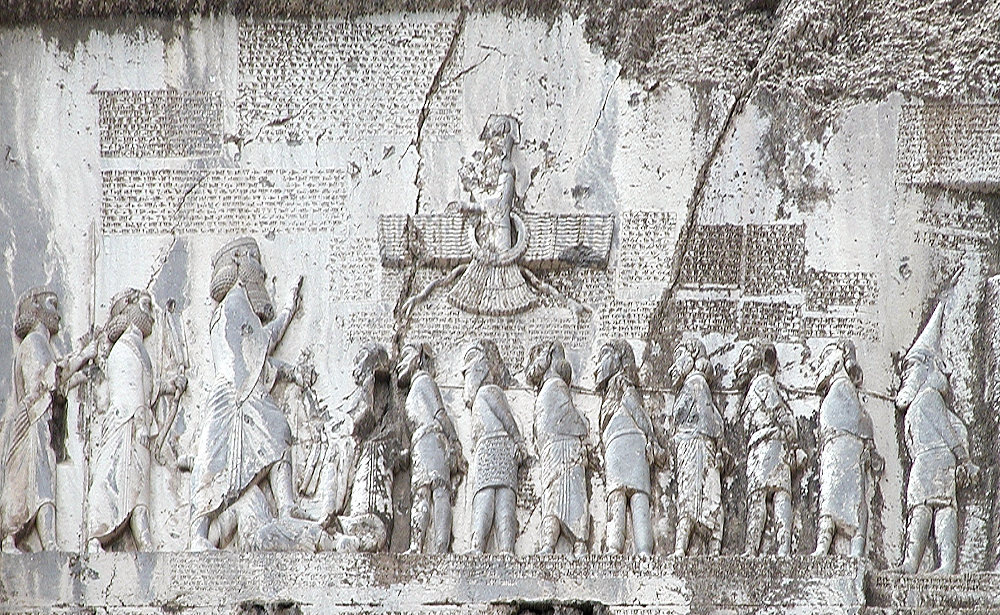

Three mysteries explained.
How do you decipher cuneiform?
Start with a pattern. Make a prediction. Test it on another inscription.

a form of Akkadian
Cuneiform is writing; Akkadian is a language. Different languages used wedge-shaped signs. Learning one system did not automatically unlock them all.
The historical evidence & sources
Grotefend used repeating royal formulas and known names in 1802. Rawlinson’s copies of Behistun enlarged the evidence. Hincks, Rawlinson, Oppert, and Talbot helped recover Akkadian readings. Their independent translations of a new inscription largely agreed in an 1857 test.
The name exercise is a simplified English model of the reasoning, not a transcription of the photograph. University of Hamburg: history of decipherment · Photograph and rights.
{kind=link}
How does paleography work?
Paleography is the study of old handwriting. The shape of a letter is evidence.
One letter: bet · Twelve handwritten examples
Look closely
See the complete research figure ↗- 1Match the letterCompare bet with bet.
- 2Look for a patternCheck many letters and strokes.
- 3Anchor the comparisonUse independently dated copies.
- 4Estimate a rangeCheck other evidence, too.
A copy’s handwriting can help date that copy. It does not tell you when its story was first composed.
How certain is the date? What does carbon dating add?
Personal habits, writing tools, and older styles can complicate comparisons. One unusual letter cannot establish a date. Carbon-14 estimates the age of the writing material; it supplies a different kind of evidence.
Few Dead Sea Scrolls carry explicit dates. A 2025 study using radiocarbon and handwriting analysis proposed revisions to several traditional estimates: dates remain testable conclusions.
Sources: Israel Antiquities Authority; Popović et al. (2021), figure 1 (individual samples in the black inset; blue shapes elsewhere in the full figure combine multiple examples); Popović et al. (2025). This shape exercise illustrates observation; it does not date these twelve samples.
Why is seven so important?
Count the sevens in this week’s flood stories: seven days, seven pairs, seven loaves, seven bowls and seven more. Pick an example. Where does the count land?
One answer: seven would not divide
The oldest sevens come from the people who first told the Gilgamesh stories, the Sumerians, and they counted in sixties.
We still use their system every day: sixty minutes in an hour, sixty seconds in a minute. Sixty is easy to share. Try it: split 60 into halves, thirds, quarters, fifths or sixths, and every share comes out even.
Now try sevenths. Sixty will not split into seven even shares, and in their numbers one seventh runs on forever: 8, 34, 17, 8, 34, 17…
The historian of Babylonian mathematics Kazuo Muroi argues that this is where seven’s mystery began. It was the first number that would not divide cleanly, so it stood apart.
Divide one by…
Written the Babylonian way, in sixtieths: 1/2 is 30 sixtieths, 1/3 is 20.
“He (Gilgamesh) crossed the first mountain with him (Enkidu), but the cedars were not revealed to his heart. The second mountain, the third mountain, the fourth mountain, the fifth mountain, (and) the sixth mountain. When he was crossing the seventh mountain, the cedars were revealed to his heart.”
About 2500 BCE. A Sumerian practice problem shares out a huge store of barley, seven measures per man. Muroi argues seven was picked on purpose as the hard divisor: the answer leaves a remainder.
The same century. A Sumerian proverb: “Seven lies are too numerous.”
About 2100 BCE. For seven days of a temple festival, a slave woman was the equal of her mistress.
This is one scholar’s explanation, and a good one to argue with. Can you think of others? The moon changes phase about every seven days, and the ancient sky had seven lights that moved: the sun, the moon and five planets. Which explanation convinces you more, and why?
Does every seven mean the same thing?
No. A shared number does not prove that one story copied another. In Genesis seven marks holy time; in Gilgamesh XI it ends an ordeal and measures a failure. Read what each seven does. And count carefully: the flood in Genesis lasts far longer than seven days.